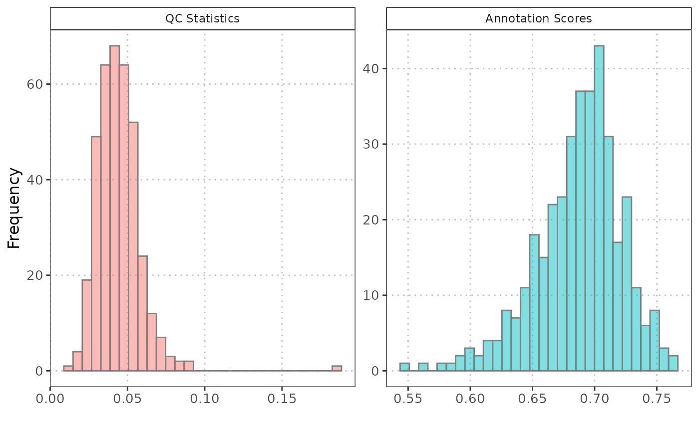
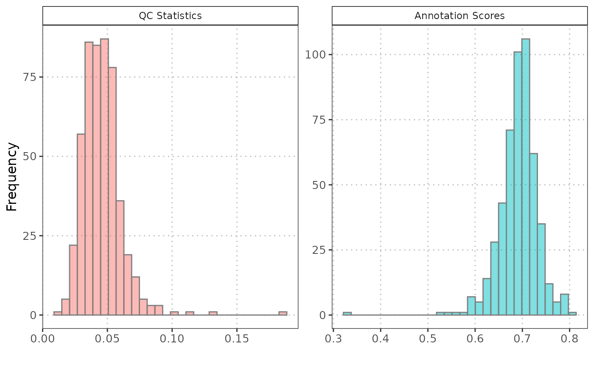

R/histQCvsAnnotation.R
histQCvsAnnotation.RdThis function generates histograms for visualizing the distribution of quality control (QC) statistics and annotation scores associated with cell types in single-cell genomic data.
histQCvsAnnotation(
sce_object,
cell_type_col,
cell_types = NULL,
qc_col,
score_col,
max_cells = NULL
)A SingleCellExperiment containing the single-cell
expression data and metadata.
The column name in the colData of sce_object
that contains the cell type labels.
A vector of cell types to plot (e.g., c("T-cell", "B-cell")).
Defaults to NULL, which will include all the cells.
A column name in the colData of sce_object that
contains the QC stats of interest.
The column name in the colData of sce_object that
contains the cell type scores.
Maximum number of cells to retain. If the object has fewer cells, it is returned unchanged. Default is NULL.
A object containing two histograms displayed side by side. The first histogram represents the distribution of QC stats, and the second histogram represents the distribution of annotation scores.
The particularly useful in the analysis of data from single-cell experiments, where understanding the distribution of these metrics is crucial for quality assessment and interpretation of cell type annotations.
data("query_data")
# Generate histograms
histQCvsAnnotation(sce_object = query_data,
cell_type_col = "SingleR_annotation",
cell_types = c("CD4", "CD8"),
qc_col = "percent_mito",
score_col = "annotation_scores")

histQCvsAnnotation(sce_object = query_data,
cell_type_col = "SingleR_annotation",
cell_types = NULL,
qc_col = "percent_mito",
score_col = "annotation_scores")
